כל הצילומים מאותו רגע פתיחה של משחק ליגה, שש מול שש. שתי שורות לכל ערכה: רמה 0 (צללים, רזולוציה מלאה, קהל מלא, שחקנים קרובים מפורטים) ורמה 2 (מה שהמשחק עבר אליו אוטומטית אחרי חריגה מתקציב המשולשים: בלי צללים, רזולוציה .85, קהל שליש, רשת קלה).
| ערכה | מתי | משולשים לשחקן | סה״כ בסצנה ברמה 0 (12 שחקנים, בלי LOD) | קריאות ציור |
|---|---|---|---|---|
| kid איור (kid-full.glb) | 26/10 | 15,012 | 216K | 97 (מעל התקרה 90) |
| athlete ריאליסטי (MakeHuman) | 29/10 | 11,614 (קל 5,336) | 175K | 49 |
| v4 (characters2) | 31/10 | 26,109 | 349K | 37 |
| v5 (GPT, מצויר) ברירת מחדל היום | 04/11 | 13,054 (קל 3,344) | 192K | 37 |
תקרת המשחק: 130K משולשים לכל הסצנה (אצטדיון וקהל כ-36K).
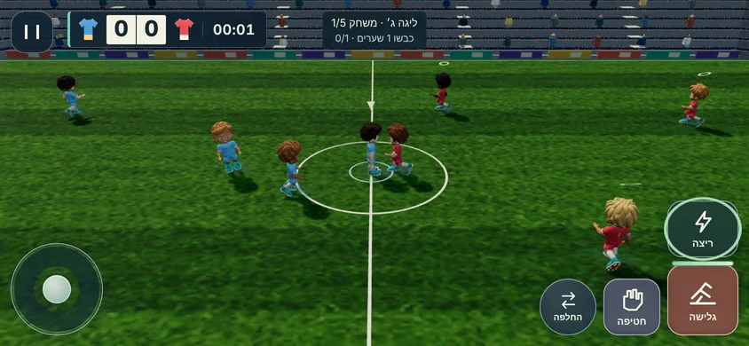
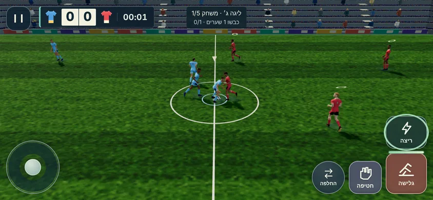
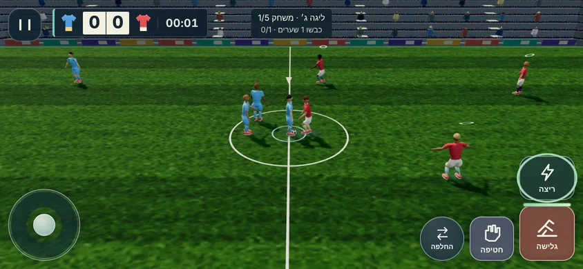
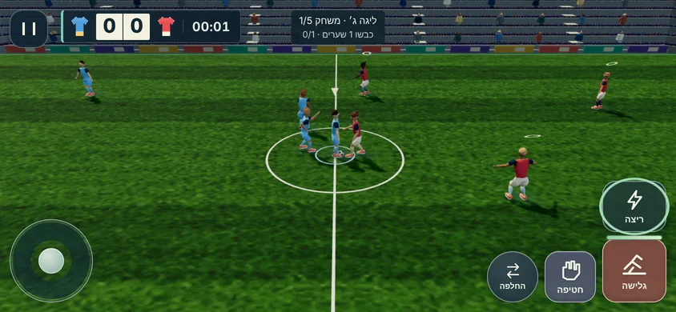
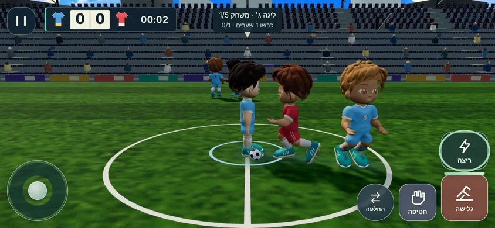
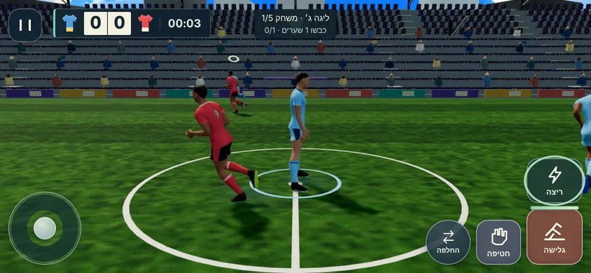
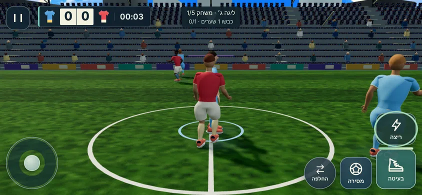
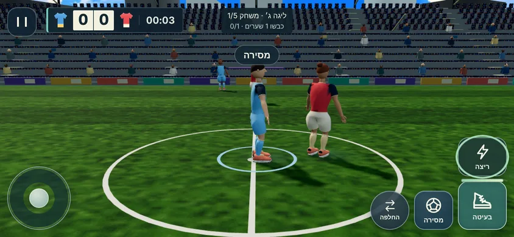
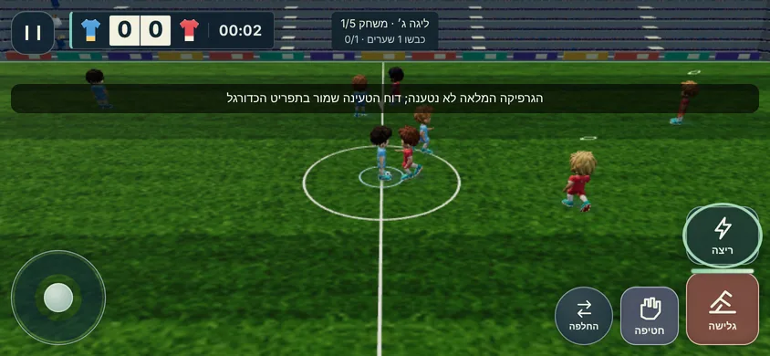
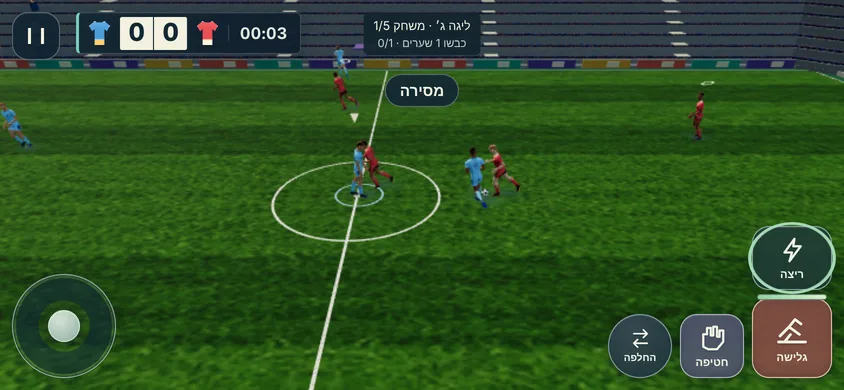
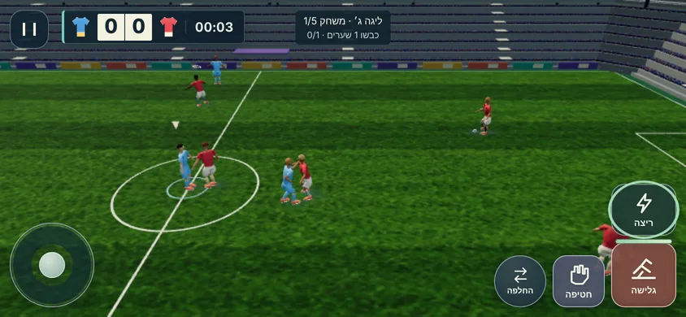
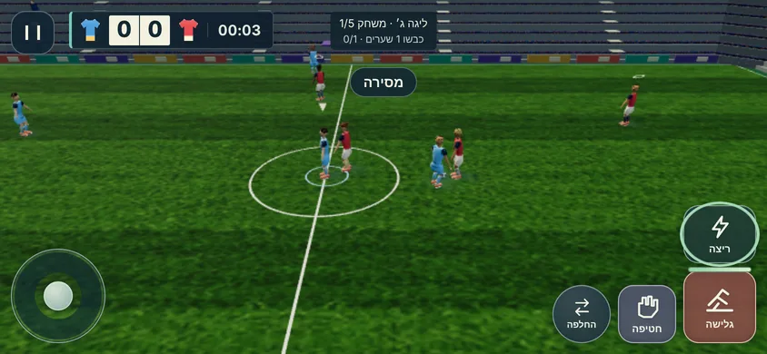
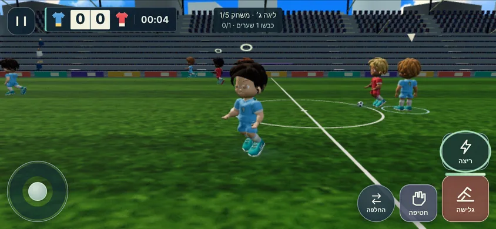
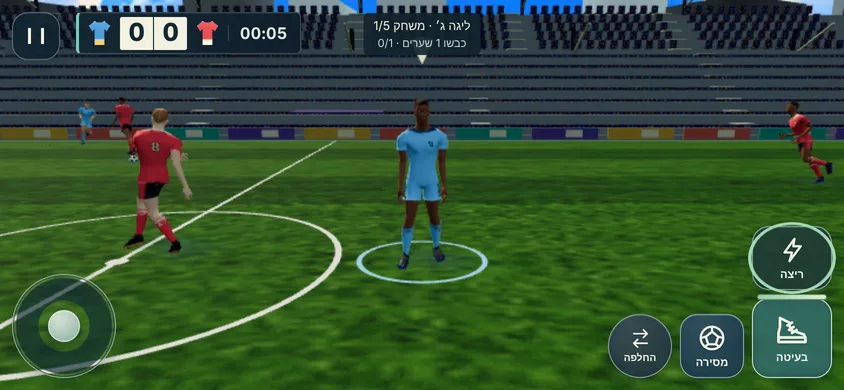
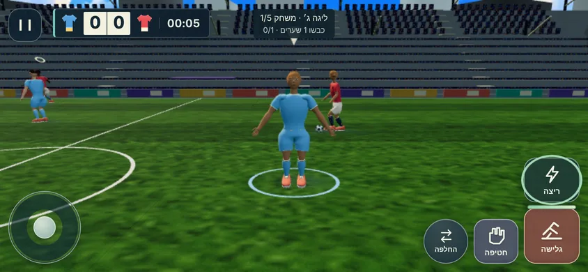
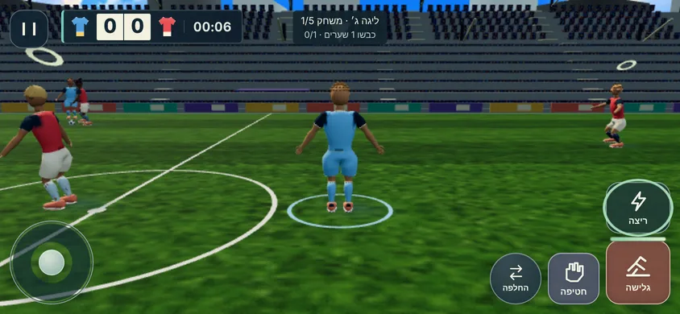
הוסיפו לכתובת המשחק: ?soccerChars=kid|athlete|v4|v5 לבחירת ערכה, ו?soccerTier=0|2 לקיבוע רמה.